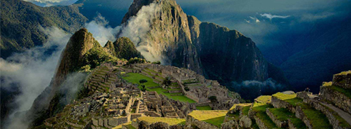

Viajar al Cusco es abrir una puerta a posibilidades de asombro y actividades tanto deportivas como recreativas inimaginable. Posee el majestuoso Machu Picchu, considerado una de las 7 maravillas del mundo y el atractivo turístico más visitado por todos los turistas que ingresan a Cusco e incluso al Perú.
Paquete 2 viaje Cusco-Machu Picchu
a Te ofrecemos 7 noches y 6 días con un 35% de descuento.
a Estancia en un hotel 4 estrellas.
a Te brindamos desayuno a la habitación, almuerzo y cena en nuestro buffet, acceso al mini-bar y muchas opciones mas.
a Cercanía a lugares turísticos y restaurants.
a Brindan una estancia segura con cámaras de seguridad, implementos de primeros auxilio, etc.
Atracciones destacadas como: Iglesia de La Merced, Templo de Coricancha, Mercado central, Estación de tren de San Pedro, Yacimiento de Quenqo, Fortaleza de Sacsayhuamán, Estación de tren de Wanchaq, Estación central de autobús, Fortaleza de Puca Pucara y Machu Picchu con una noche en la ciudad de Machu Pichu.

¿Que hay cerca?
Convento de Santa Catalina, Museu de Arte Religioso, Capilla de la
Sagrada Familia, Hatun Rumiyoc, Piedra de los 12 ángulos, Iglesia de
Santo Domingo, Catedral de Cusco, Iglesia de la Compañía de Jesús, Plaza
de Armas de Cusco, Iglesia de San Blas, Museo Inca.
Contamos con todos los protocolos de bioseguridad.